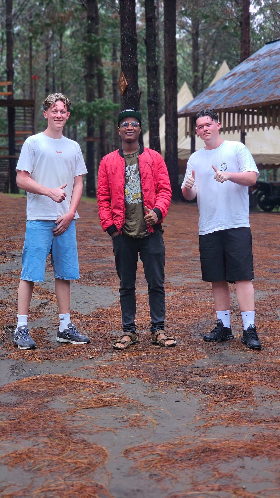
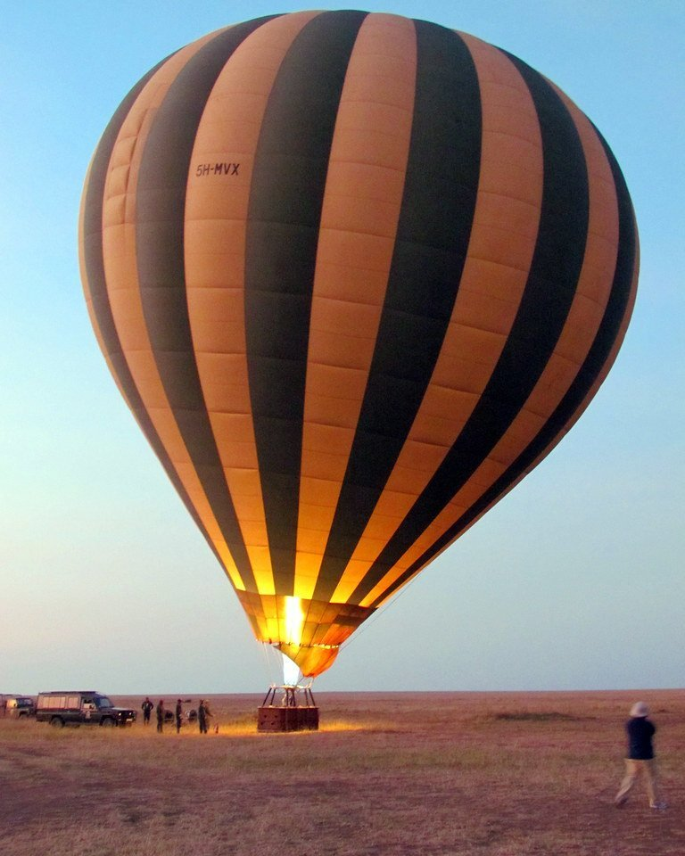
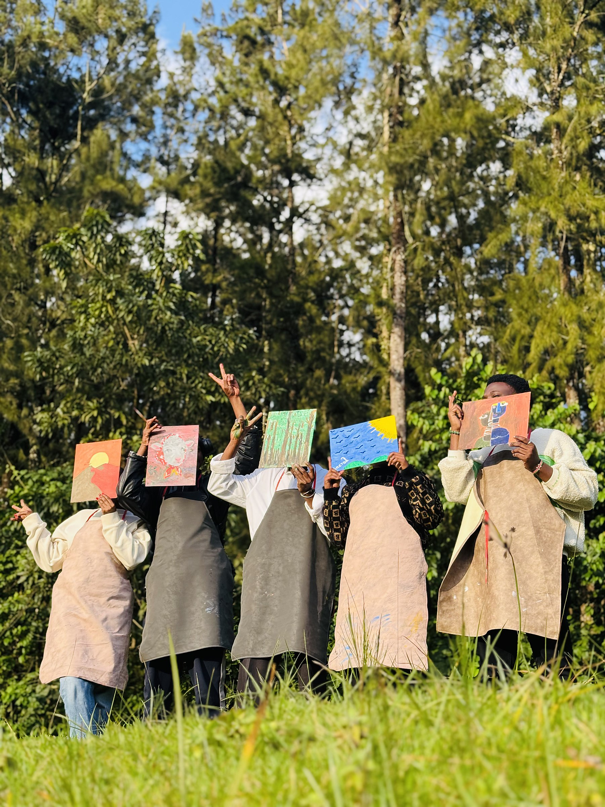

Experiences
Four unforgettable ways to meet Tanzania beyond the game-drive vehicle. Add any of these to your safari — most travellers weave two or three together into a single journey.
Step out of the vehicle and into nature
Led by professional walking guides and armed rangers, walking safaris bring you face-to-face with the raw wilderness.
Learn how to read animal tracks, observe birds up close, and explore the smaller details of the ecosystem — the insects, plants and animal behaviour. These safaris are ideal for those who want to feel truly connected to the bush.
Add a Walking Safari

Soar above the savannah at sunrise
A once-in-a-lifetime experience. Watch as herds of elephants, wildebeest and giraffes roam freely below, with the morning light casting golden hues over the landscape.
After landing, enjoy a champagne breakfast in the wild, surrounded by the sounds of nature. This experience is available in the Serengeti and other select locations.
Discover a different side of the bush after dark
Using spotlights, you'll search for nocturnal wildlife that rarely shows itself during the day.
Look for genets, bush babies, civets, owls, porcupines, and even elusive predators like leopards. Night drives offer a thrilling and educational look at Africa's lesser-seen wildlife behaviours.
Add a Night Drive
Time with the people who call this home
Our cultural experiences are crafted with respect and authenticity.
Visit Maasai villages to learn about their traditions, beadwork and way of life. Spend time with the Hadzabe, one of the last hunter-gatherer communities in East Africa. Participate in traditional cooking, drumming sessions, or community-based conservation programmes. These encounters foster mutual understanding and ensure that tourism benefits local communities.
Add a Cultural DayNot sure which to choose?
Tell us what appeals and we'll suggest how to combine them into one seamless journey.